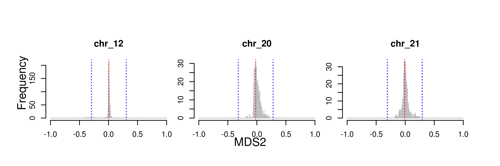
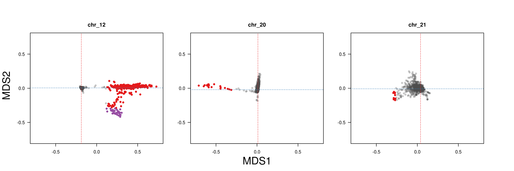

Here I show how local PCA was run with three example chromosomes, 12, 20, and 21, which are listed in local_PCA/list/chromosomes/list
dirbase=$PWD/local_PCA
dirin=$dirbase/input
dirvcf=$dirin/vcf
dirtab=$dirin/table
dirlist=$dirbase/list
dirout=$dirbase/output
dirlocalpca=$dirout/local_PCA
dirlocalpcamds=$dirout/local_PCA_MDS
dirscripts=$dirbase/scriptsDownload filtered VCF files for chromosomes 12, 20, 21.
Make list of sites from VCF.
while read chr
do
bcftools query -f '%POS\n' $dirvcf/$chr.vcf.gz > $dirtab/$chr.sites.list
done <$dirlist/chromosomes.listMake genotype table from VCF.
while read chr
do
sbatch $dirscripts/vcf2table.sh $dirvcf/$chr.vcf.gz $dirtab/$chr.table
done <$dirlist/chromosomes.list
Run local PCA. local_PCA/scripts/local_PCA.sh submits local_PCA/scripts/local_PCA.R via slurm. Check local_PCA/scripts/local_PCA.sh and local_PCA/scripts/local_PCA.R for detail.
module load R/3.5.3
while read chr
do
sbatch $dirscripts/local_PCA.sh $dirtab $dirtab $dirlocalpca $dirlocalpcamds $dirlist $chr $dirscripts
done <$dirlist/chromosomes.list
Concatenate the output for the three chromosomes.
while read chr
do
cat $dirlocalpcamds/local_PCA_MDS_$chr.txt
done <$dirlist/chromosomes.list | awk 'NR==1{print $0}NR>1{if($1!="chr")print $0}' > $dirlocalpcamds/local_PCA_MDS_3_chromosomes.txt
Get threshold of MDS values and plot MDS distribution.
Rscript $dirscripts/plot_local_PCA_MDS_distribution.R --input $dirlocalpcamds/local_PCA_MDS_3_chromosomes.txt --output $dirlocalpcamds/local_PCA_MDS_3_chromosomes --chrlist $dirlist/chromosomes.list

Plot MDS1 vs MDS2.
Rscript $dirscripts/plot_local_PCA_MDS_MDS1-vs-MDS2.R --input $dirlocalpcamds/local_PCA_MDS_3_chromosomes.txt --thre $dirlocalpcamds/local_PCA_MDS_3_chromosomesthreshold.txt --output $dirlocalpcamds/local_PCA_MDS --chrlist $dirlist/chromosomes.list
Get coordinates of outlier windows.
Rscript $dirscripts/getOutliers.R --input $dirlocalpcamds/local_PCA_MDS_3_chromosomes.txt --thre $dirlocalpcamds/local_PCA_MDS_3_chromosomesthreshold.txt --output $dirlocalpcamds/local_PCA_MDS --chrlist $dirlist/chromosomes.listMake Manhattan plots.
Rscript $dirscripts/plot_local_PCA_MDS_manhattan.R --input $dirlocalpcamds/local_PCA_MDS_3_chromosomes.txt --thre $dirlocalpcamds/local_PCA_MDS_3_chromosomesthreshold.txt --bed $dirlocalpcamds/local_PCA_MDS_outlier.bed --output $dirlocalpcamds/local_PCA_MDS --chrlist $dirlist/chromosomes_length.list

Here I show how PCA was run for three local PCA outlier regions of chromosomes 12, 20, and 21, which represent class-1, 2, and 3 outliers.
dirbase=$PWD/PCA
dirin=$dirbase/input
dirvcf=$dirin/vcf
dirlist=$dirbase/list
dirout=$dirbase/output
dirscripts=$dirbase/scriptsLink VCF files from local_PCA/input/vcf and index them.
ln $dirbase/../local_PCA/input/vcf/*vcf.gz $dirvcf
while read chr
do
echo $chr
bcftools index $dirvcf/$chr.vcf.gz
done<$dirlist/chromosomes.list
Copy BED file for coordinates of local PCA outliers of chromosomes 12, 20, and 21.
ln $dirbase/../local_PCA/output/local_PCA_MDS/local_PCA_MDS_outlier.bed $dirlistExtract SNPs within the local PCA outlier regions.
while read chr from to
do
bcftools view -O z -r $chr:$from-$to -S $dirlist/blackcap_id.list $dirvcf/$chr.vcf.gz | vcftools --gzvcf - --max-missing 0.9 --recode --recode-INFO-all -c |bgzip > $dirvcf/${chr}_${from}_$to.vcf.gz
done < $dirlist/local_PCA_MDS_outlier.bedRun PLINK for PCA.
while read chr from to
do
sbatch $dirscripts/plink_pca.sh $dirvcf/${chr}_${from}_$to $dirout/${chr}_${from}_$to
done < $dirlist/local_PCA_MDS_outlier.bedPlot PCA results.
Rscript $dirscripts/plot_pca_per_outlier.R --dirpca $dirout --poplist $dirlist/id_spp_pop_site_pheno.tsv --outlierlist $dirlist/local_PCA_MDS_outlier.bed --chrlist $dirlist/chromosomes.list
Get Eigenvalues.
while read chr pos1 pos2
do
awk -v chr=$chr -v pos1=$pos1 -v pos2=$pos2 'BEGIN{printf "%s %s %s ", chr,pos1,pos2}{printf "%s ",$1}END{print ""}' $dirout/${chr}_${pos1}_${pos2}.eigenval
done < $dirlist/local_PCA_MDS_outlier.bed | awk 'NR==1{printf "%s %s %s ","chr","pos1","pos2";for(i=4;i<=NF;i++){printf "%s ","PC"i-3};print ""}{print $0}'> $dirout/eigenvalues.txt
Plot Eigenvalues.
Rscript $dirscripts/plot_eigenval.R --dirpca $dirout 
dirbase=$PWD/class-1
dirin=$dirbase/input
dirvcf=$dirin/vcf
dirlist=$dirbase/list
dirout=$dirbase/output
dirscripts=$dirbase/scriptsMake link to VCF of chromosome 12, as an example chromosome harbouring a class-1 genomic island.
ln $dirbase/../PCA/input/vcf/chr_12.vcf.gz $dirvcf
ln $dirbase/../PCA/input/vcf/chr_12.vcf.gz.csi $dirvcfGet coordinates of class-1 genomic island of chromosome 12.
awk -v OFS="\t" '$1=="chr_12"{$1=$1;print $0}' $dirbase/../local_PCA/output/local_PCA_MDS/local_PCA_MDS_outlier.bed > $dirlist/class-1.chr_12.bedMake list of individuals with AA, AB, and BB.
awk '$3<0{print $1}' $dirbase/../PCA/output/chr_12_14126710_22227355.eigenvec > $dirlist/chr_12.AA.list
awk '$3>0.15{print $1}' $dirbase/../PCA/output/chr_12_14126710_22227355.eigenvec > $dirlist/chr_12.BB.list
awk '$3>0&&$3<0.15{print $1}' $dirbase/../PCA/output/chr_12_14126710_22227355.eigenvec > $dirlist/chr_12.AB.listCompute heterozygosity.
while read chr pos1 pos2
do
for geno in AA AB BB
do
while read id
do
# echo $id $chr $geno
bcftools query -f '[%GT ]\n' -r $chr:$pos1-$pos2 -s $id $dirvcf/$chr.vcf.gz |sed 's@0/0@0@g;s@0|0@0@g;s@1/1@0@g;s@1|1@0@g;s@0/1@1@g;s@0|1@1@g;s@1|0@1@g;s@\./\.@@g;s@\.|\.@@g' | awk -v chr=$chr -v geno=$geno -v id=$id '{i++;s+=$1}END{print chr,geno,id,s,i,s/i}'
done<$dirlist/${chr}.$geno.list
done
done < $dirlist/class-1.chr_12.bed | awk 'BEGIN{print "chr","geno","id","n.het","n.sites","het"}{print $0}' > $dirout/chr_12.het.txt
Plot heterozygosity for AA, AB, and BB.
Rscript $dirscripts/plot_het.R --dir $dirout
FST π